俄乌冲突已经爆发896天，乌克兰军队突然又支棱起来了。
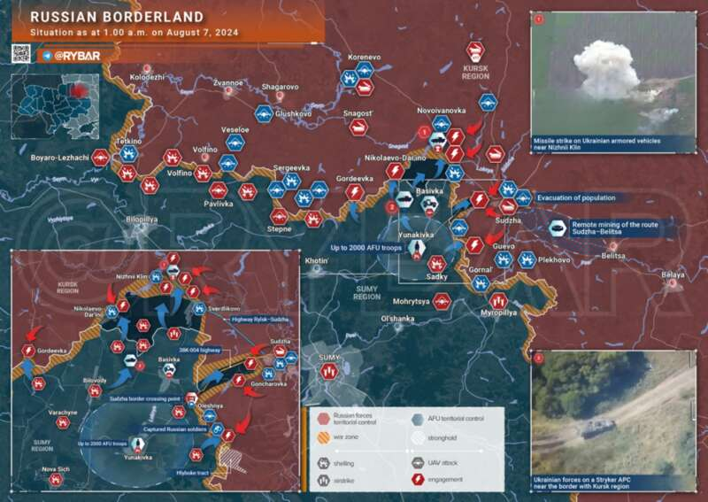
当地时间8月6日拂晓时分，乌克兰军队突然在俄乌西北部苏梅-库尔斯克边境线集结部队，随后，大批乌军部队以机械化突击的方式，越过了俄库尔斯克州苏贾地段的边境线，向库尔斯克州发起大规模进攻，俄边防军仓促应战。毫无疑问，由于俄军准备不足，乌军部队则拥有兵力和装备优势，俄军位于警戒阵地的边防军很快败下阵来。遭到俄军打击的乌军越境部队

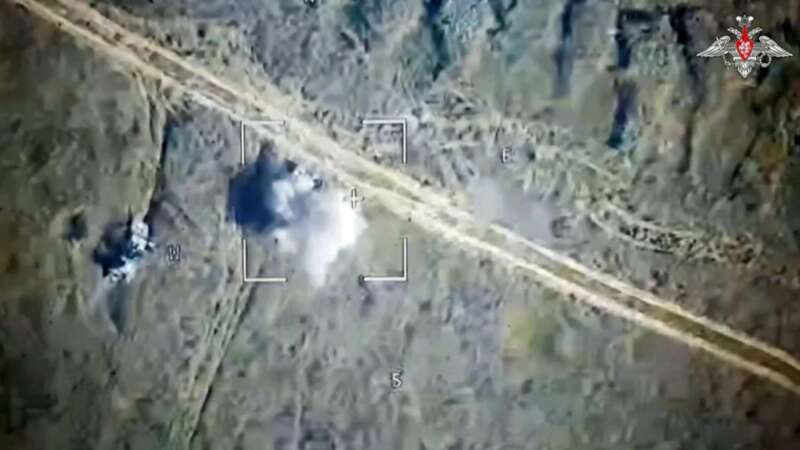
尽管俄军迅速调动了诸兵种合成集团军属战术火箭部队，在无人机的目标指示下，对集结在边境地区的乌军进攻集群发射了“伊斯坎德尔”战术导弹和“龙卷风-S”制导火箭弹，甚至还有朝鲜的“火鸟”自行反坦克导弹发射车被紧急调动堵口，这些装备都给乌军造成了一定的损失，但乌军迅即投入第二梯队向库尔斯克州实施纵深突击，战斗进入白热化。
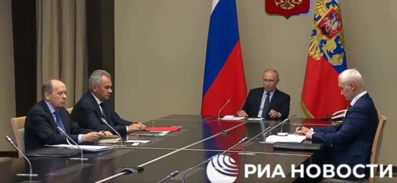
莫斯科时间8月7日下午，俄罗斯总统普京在克里姆林宫紧急召开俄罗斯国家安全会议，俄罗斯国防部长别洛乌索夫、俄联邦安全会议秘书绍伊古、俄罗斯联邦安全局局长博尔特尼科夫现场参加，俄军总参谋长格拉西莫夫大将在特别军事行动区域远程参会。会上普京总统脸色阴沉，不知道此时的普京有没有想起2008年8月8日俄格战争爆发第一天的诸多往事，几位参会的大佬都是一副挨训的表情。
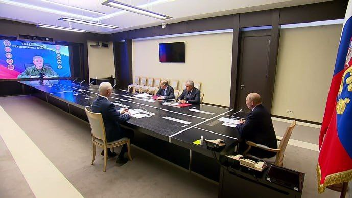
格拉西莫夫大将现场汇报情况称，乌军从8月6日早晨开始，在库尔斯克州发起战役进攻，投入兵力约1000人，目前进攻的势头已经被遏止，格拉西莫夫大将向普京表示，俄军将会把所有进入俄境内的乌军一个不剩地赶出国境。

目前的战况尽管这么一说，截至目前（北京时间2024年8月8日午后，莫斯科时间8月8日拂晓），库尔斯克州的情况依然相当紧张，大伊万大致总结了一下目前的战况：遭乌军埋伏、被摧毁的俄军运输卡车与T-62M坦克
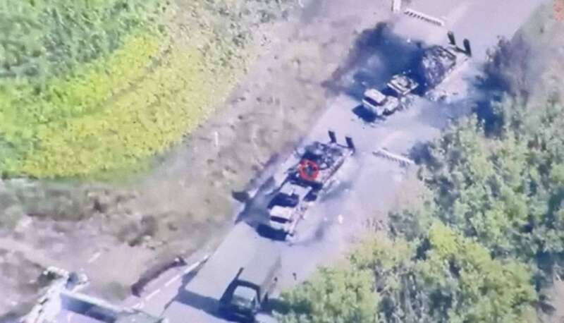
在乌军进攻部队上，可以肯定乌军动用兵力远远不止格拉西莫夫大将所说的1000人，或者说乌军仅仅是第一梯队就动用了三个营的兵力，按照第一、第二梯队和预备队较为平均的兵力分布（便于实施后续进攻），那么这意味着乌军的进攻起码有两到三个旅。至于哪些旅参与了进攻，俄军的传言也是混乱不堪。最离谱的说法，说乌军动用了第22、第72、第88机械化旅，第80、第82空中突击旅，第103国土防御旅、国际军团、俄罗斯自由军……总计七八个旅级单位参与进攻。对库尔斯克地区的进攻的乌军美制M1132“斯特赖克”工程车
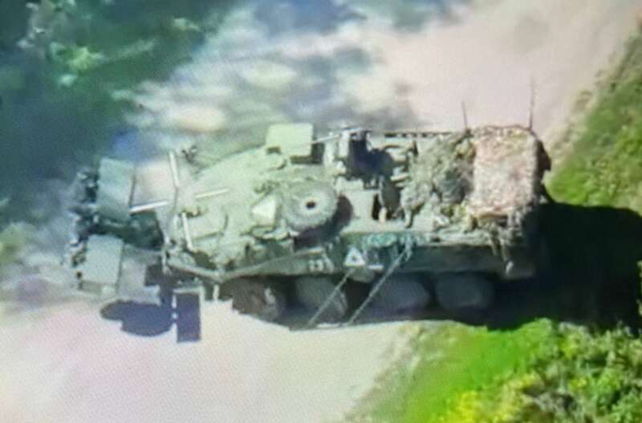
但大伊万认为比较扯：比如第82空突旅，该旅在前一段时间还在拼命硬创沃尔昌斯克，未经整补就调过来打库尔斯克明显不现实。俄军认为，第82空突旅参战的主要理由是认为进攻库尔斯克的部队出现了M1126斯特赖克装甲车。但最新消息称，该装甲车目前在第22机械化旅也有，因此大概率还是第22旅的部队。比如第80空突旅，该旅在克拉斯诺格夫卡已经被俄军第1步兵军第5旅打到破防了，临阵脱逃不说，还拍了小视频要求更换旅主官。疑似遭乌军击中后紧急迫降的俄军卡-52直升机
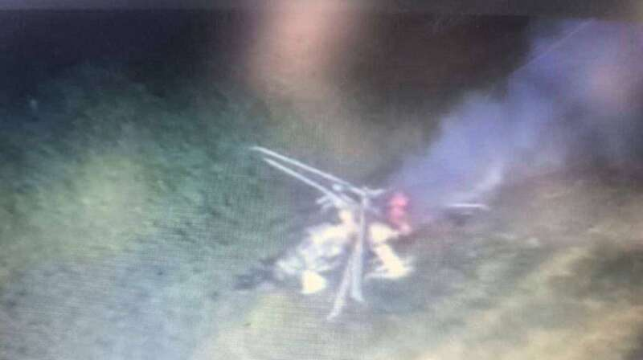
比如第72机械化旅，该旅的主力都在南顿涅茨克方向的弗勒达蹲坑，不可能调动多少人过来。因此，大家普遍认为乌军的进攻集团，是以第22机械化旅这个勉强完整的旅为基干，揉入了一堆从其它旅团抽调过来的营甚至连战术群编成的一个大杂烩，总兵力大伊万认为最多1万人。在进攻轴线上，目前确认乌军起码有两个进攻轴线：
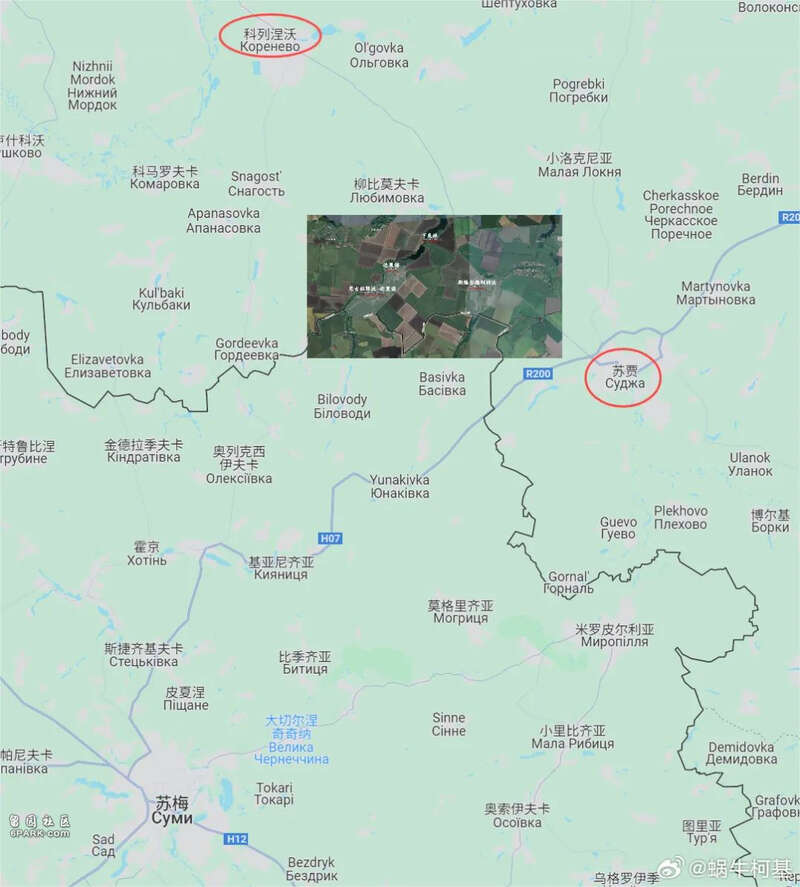
北轴线沿着苏贾往西北的公路，通过柳比莫夫卡，进攻目标是科列涅夫。俄方认为，乌军之所以将科列涅夫作为主要进攻目标，是因为这里有俄罗斯向欧洲输送天然气的控制站点。最新消息是，俄军紧急调动了空天军摩步团（一支由空天军老兵组成的志愿支队），在科列涅夫暂时挡住了乌军的DRG（侦察与破坏小组）。
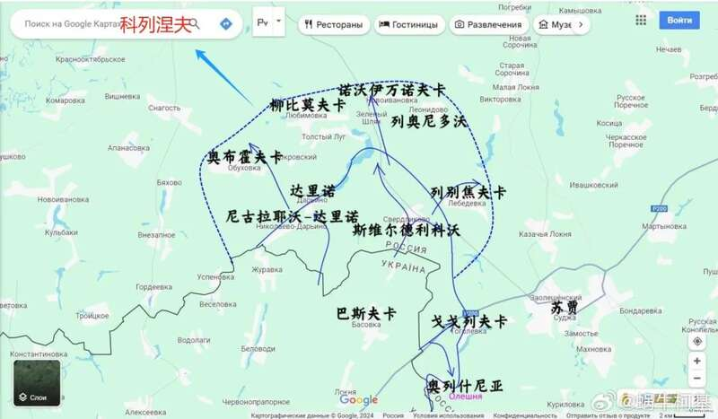
但是，考虑到空天军摩步团这“空军野战师”一样的buff（赫尔曼迈耶震怒），大伊万对这支部队的战斗力实在没法放心，因此在科列涅夫方向必须等待俄陆军机动部队到位，有消息说，瓦格纳第13支队正从白俄罗斯方向往俄罗斯境内机动，只能期待他们跑快点。
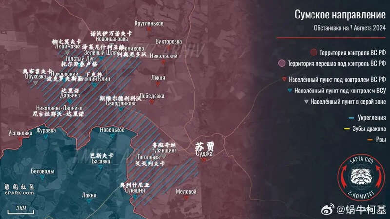
南轴线直接指向苏贾，目前苏贾的情况是最复杂的，也是最混乱的，有人说这个城镇已经丢了，也有人说没丢。中午有消息说，库尔斯克州的民众自卫队（当年普里戈任揽下来的活）正在苏贾河沿岸和乌军交战，大伊万感觉情况不妙，这已经是第48小时了，俄军的正规军在哪儿呢？北集群的拉平上将手里边真的一点预备队都没有了吗？
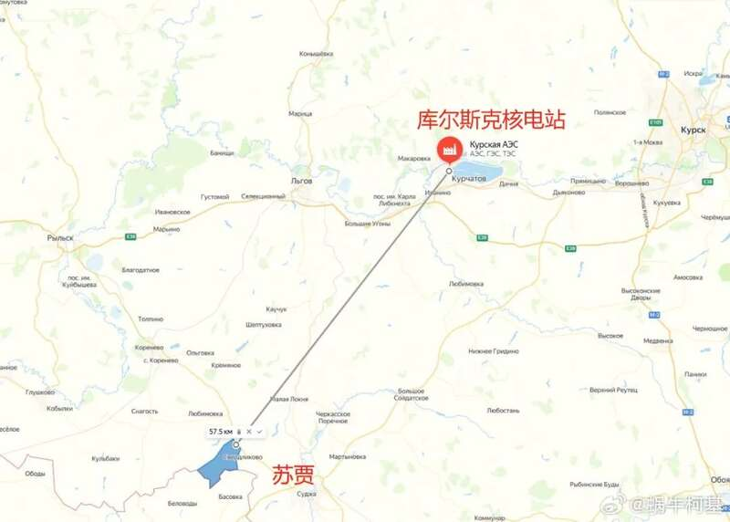
俄网有人猜测，乌军之所以直趋苏贾，其主要战术意图是沿着边境地带仅有的一条高等级公路向库尔斯克方向突进，夺取库尔斯克核电站。大伊万的观点这个说法未免过于惊悚，但在苏贾之后到库尔斯克，俄军一路上找不到什么太好的、可以作为防御基点的大型居民点，这倒也是事实。因此，苏贾一旦丢失，乌军就基本上可以撕咬下一大块俄罗斯的土地了。

如何看待当前战局在分析完了当前战况之后，咱们来对目前库尔斯克州的战局进行简单总结。
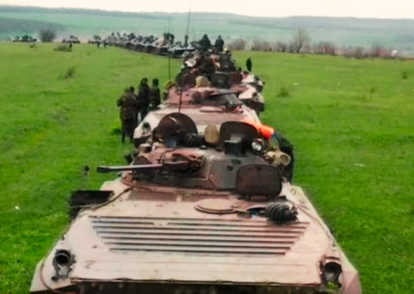
首先是乌军此次进攻的性质和意图，大伊万认为既然调动了多个旅级部队，按照乌军军制结构，多个旅（高级战术兵团）统合成为战役军团，战役军团负责战役进攻。那么，此次对库尔斯克州的进攻起码达到了战役级，可以说是这两年来乌军主动进攻俄罗斯本土规模最大的一次，也可以被视为一次强度有限的大反攻（不如2022年9月和2023年6月），乌军的战役意图大伊万认为两个层次吧：乌军突袭库尔斯克边防检查站的画面，准备不足的俄军动员兵至少被抓了40多个俘虏……
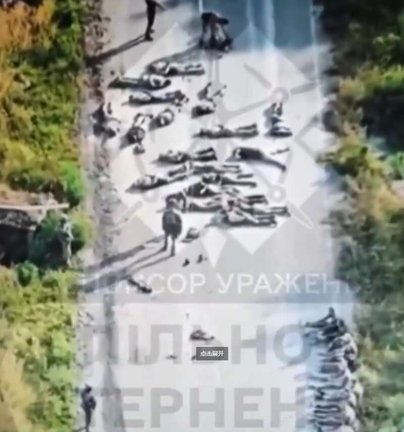
在战术层面上，只要求夺取相当面积的俄罗斯的领土，可以杀伤一部分俄罗斯武装部队。事实上，从目前的战况看，乌军给予俄军部队的杀伤比较有限，抓获的都是俄罗斯的边防警卫人员，俄正规军现在还没有进入交战。在战略层面上，乌军夺取土地的意图，是为了在后续与俄罗斯的谈判中占据主动地位，要求一块地方换另一块地方，比如库尔斯克换顿巴斯，这也是为什么目前乌军已紧急派出工兵部队修筑工事了。据称是俄罗斯苏贾镇遭乌军炮击后受损的房屋
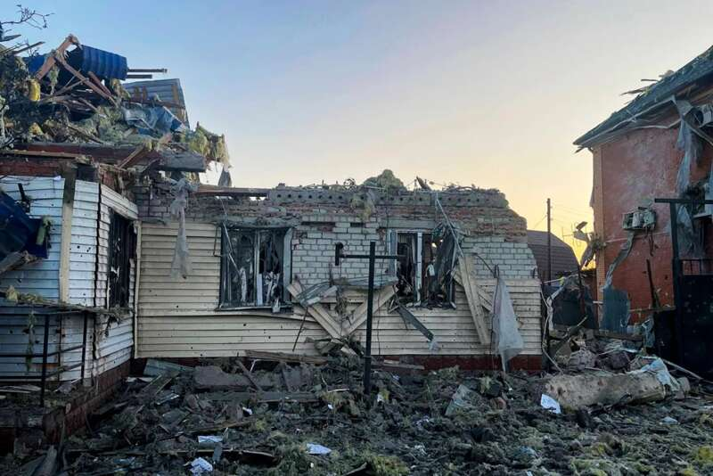
而在作战组织上，大伊万认为乌军的战役组织尚可，战役布势带有明显的希尔斯基的风格，在战役组织上，乌军起码做到了一定的突然性。事实上，从近期俄军SSO在苏梅边境线的活动情况看，俄军似乎意识到了乌军有在苏梅-库尔斯克边境线上实施越境的可能性，但应该没有想到乌军会实施如此大规模的越境进攻。这不仅导致俄军在面对乌军进攻时手忙脚乱，最大的问题是导致俄军在苏贾方向上没有足够的兵力担任机动防御部队职能。参考之前别尔哥罗德方向俄军的防御战斗，俄军都第一时间摇来了正规军展开机动防御，这次在苏贾却失算了，很明显由于情报和战场监视缺陷，俄军对该战线乌军意图估计严重不足。公路上燃烧的俄罗斯卡车
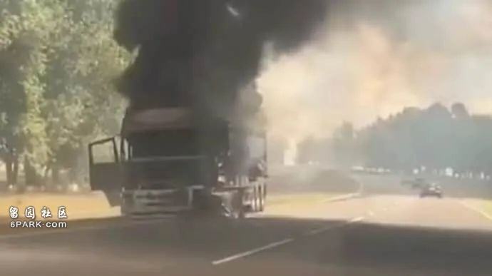
从战役布势上，此次乌军对库尔斯克方向的战役进攻，依然类似于2022年9月在哈尔科夫方向的大反攻，由大量的DRG(侦查和破坏部队)担任先导，然后机械化部队在后面硬冲，这一看就是希尔斯基的指挥风格。这种打法对于某些地幅兵力密度稀薄，战线四面漏风的俄军来说堪称具有奇效，尤其是大量散出去的DRG到处打卡，拍照发网上，给人以乌军到处都是的错觉，是非常搞人心态的一件事。2022年9月，俄军在奥斯基尔河以西的防御之所以崩溃，很大程度上就是被满世界乱跑的乌军DRG给弄破防了……所以大伊万觉得，希尔斯基不愧是最后的苏军传人，这兵力运用模式，这战役打法，整个一受到奥加尔科夫影响的战役机动集群啊。
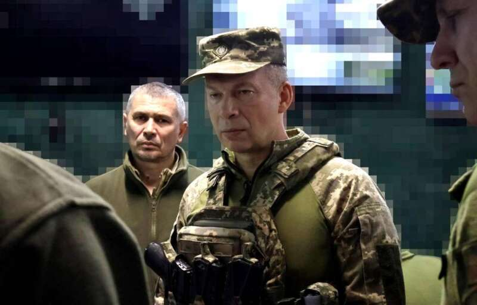
当然，现在是2024年8月而不是2022年9月了，要吃住希尔斯基的这三板斧，难度也并不高：第一，是必须强化纵深遮断能力，打击乌军的第二梯队。乌军的战役布势是“老鼠拉木锨，大头在后头”，前面打卡的都是轻装的DRG，真正的机械化部队都在第一和第二梯队呢。因此，对乌军后续梯队的技术兵器实施火力毁伤，打击乌军的接续梯队，将极大地限制乌军实施纵深进攻的能力，北集群正在使用伊斯坎德尔、龙卷风和空天军的前线轰炸机来完成这一点。库尔斯克边境前线，俄军再次发射集束弹头的“伊斯坎德尔”弹道导弹打击隐藏在树林带中的乌克兰装甲部队

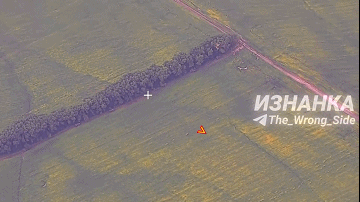

第二，是必须准确判断乌军的主攻方向，将机动部队调动到乌军的主攻方向上。否则，一旦捕捉不住乌军，让乌军的进攻集群在俄军的纵深跑起来，问题就严重了，说不定连防御部队都能给直接甩到敌后去。这一点倒也不是太大的问题，乌军的主攻方向现在是明摆着。第三，是最重要也是最基本的，必须尽快调动预备队堵口，不能让乌军继续在俄军的战役地幅里横冲直撞，否则后果不堪设想。因此，现在库尔斯克方向战局的焦点，就集中在一点，俄军正规军什么时候开始进入主力交战上。